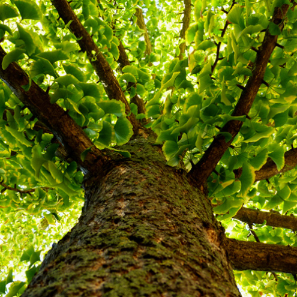
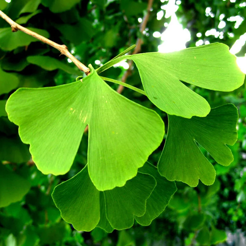
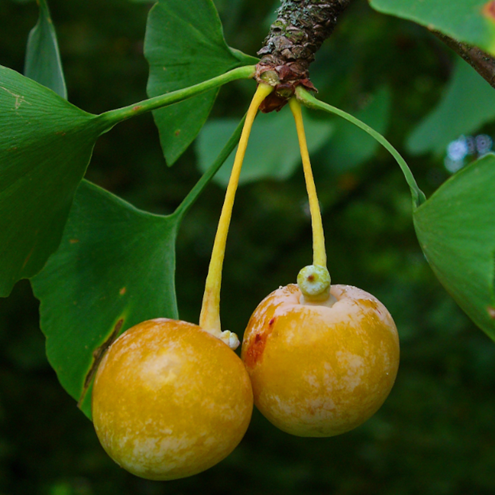

Гинкго двулопастный (Ginkgo biloba), также известный как «серебристый абрикос», часто называют живой окаменелостью, поскольку его история насчитывает около двухсот миллионов лет. Естественный ареал гинкго двулопастого — территория Китая.
Гинкго двулопастный — высокое листопадное дерево. Во взрослом возрасте высотой до 40 м и диаметром ствола до 4,5 м. Крона вначале пирамидальная, с возрастом разрастается. Листья имеют характерную веерообразную форму, разделенную на две доли, и осенью становятся ярко-желтыми. Дерево имеет мощную корневую систему, что делает его ветроустойчивым.
Листья с обеих сторон гладкие, кожистые, длиной до 6 см и шириной 5-8 см. Именно листва придает кустарнику кудрявость. Листья гинкго ботанически классифицированы как иглы.
Экстракт листьев гинкго используется в медицине для улучшения памяти, кровообращения и работы мозга. Гинкго — двудомное растение: есть мужские и женские деревья. В Китае и Японии гинкго считается священным деревом и символом стойкости и мудрости, его часто сажают возле храмов.